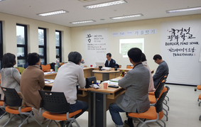

피스메이커 교육
국경선평화학교는 분단된 한반도의 비무장지대(DMZ)에서 남한과 북한의 항구적인 평화공존을 위한 평화운동과 세계 분쟁지역에서의 평화•구호활동에 전 생애를 걸고 사명을 다하는 ‘피스메이커’(Peacemaker)를 육성합니다. 피스메이커는 남북한의 평화 건설을 위한 평화통일운동가, 평화교육가, 구호봉사활동가, 국제평화활동가로 일합니다.
교육 목표
- 남북한 갈등과 대립상황에서 피스메이커희 평화 창조 능력과 신념형성
- DMZ 분단현장 및 해외평화현장 체험을 통한 현장 문제 해결능력 체득
- 국제평화 운동 참여를 통한 국제적 관계형성과 소통능력 증진

학사 과정
- 일반 과정
- 1학년 3학기 피스메이커 기본 교육
- 전문 과정
- 일반과정 수료 후 국경선평화학교 활동에 참여하고 배우는 인턴과정과 평화활동 현장에 실습생으로 참여하면서 배우는 전문영역실습과정을 거쳐 평화 논문을 저술하고 100명의 후원 네트워크가 형성되면 졸업하게 됩니다.